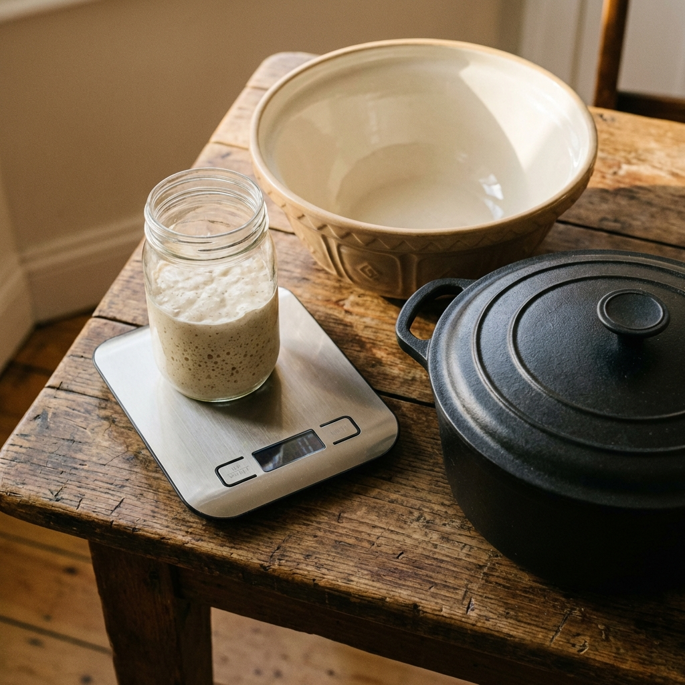

Things You Need (and things that are nice!)
You don't need a professional bakery setup. You probably have most of this stuff already. Here is the breakdown of what is actually essential.
The Absolute Must-Haves
You genuinely only need a few key things to make fantastic bread:
- Digital Kitchen Scale: Non-negotiable! Sourdough relies on ratios, and measuring by weight (grams) is the only way to be accurate and get consistent results. Forget cups for this!
- Large Mixing Bowl: Big enough to hold your dough with room for it to rise. Glass, ceramic, or plastic all work.
- Jar for Starter: A clean glass jar, roughly 0.5 to 1 litre capacity, is ideal for storing and feeding your starter. Something with straight-ish sides helps you see when it doubles.
- Dutch Oven / Heavy Lidded Pot: This is the secret weapon for amazing crust in a home oven. A heavy, oven-safe pot with a tight-fitting lid traps steam released by the dough, mimicking a professional baker's steam oven. Cast iron is classic, but any heavy, oven-safe pot (like stainless steel or ceramic) with a lid will work. Ensure it's safe to heat to 235°C (455°F).
-
Ingredients:
- Sourdough Starter: The living culture that makes the bread rise. You can make your own or buy a mature one.
- Strong White Bread Flour: Higher protein content is needed for good gluten development and structure.
- Salt: Fine sea salt is usually recommended.
- Water: Filtered or bottled water is best if your tap water is heavily chlorinated, as chlorine can inhibit the starter.
Nice-to-Have (But Not Essential Starting Out)

These things are helpful and make the process smoother or prettier, but you can definitely succeed without them initially:
- Banneton (Proofing Basket): A rattan basket (usually round or oval) that supports the dough during its final proof, often giving it nice rings. A medium bowl lined well with a floured tea towel is a perfectly good substitute to start.
- Bench Scraper: A flat piece of metal or plastic. Brilliant for handling sticky dough, dividing it, cleaning your work surface, and helping with shaping.
- Lame or Very Sharp Knife: Used for scoring the top of the loaf just before baking. This controlled cut allows the bread to expand upwards nicely. A razor blade (carefully!) or the sharpest knife you own can work in a pinch.
- Wire Rack: Really important for cooling the baked loaf completely. It allows air to circulate underneath, preventing a soggy bottom crust.
- Food Thermometer: Useful for checking the temperature of your water (for consistency) and the internal temperature of your dough during bulk fermentation if you want to get technical.
- Rice Flour: The absolute best thing for dusting bannetons or tea towels because it doesn't absorb water easily and prevents the dough from sticking during the final proof. Plain flour can work but can get sticky.